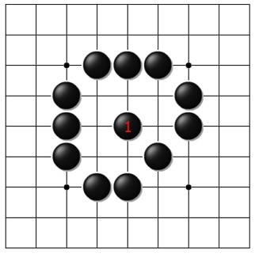
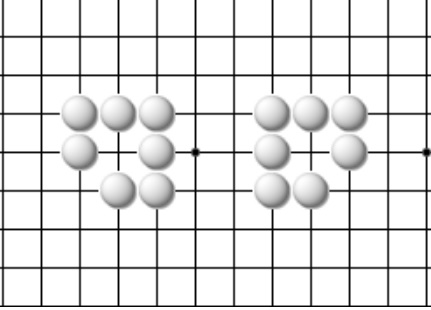

Группа выживает, если она может построить два неприступных пункта.
Понятие «глаза» определяет статус группы камней, т.е. выживает группа или погибает.
Точка «а», окружённая группой из семи камней, является «глазом». Чёрные не могут сделать ход в эту точку, до тех пор, пока не закроют все остальные дамэ этой группы, как показано на втором рисунке. В этом случае захват камней возможен ходом ч.1. Результат захвата показан на третьем рисунке.
 
Теперь объединим две группы, у каждой из которых есть по одному глазу (рис. 4), в одну с двумя глазами (рис. 5). Конечно же, в процессе партии передвигать камни нельзя. Мы объединяем группы только с целью продемонстрировать понятие «два глаза». Далее, позволим чёрным занять все внешние дамэ, как показано на последнем рисунке. Даже после такого окружения захватить белую группу нельзя. Почему?Ход в любую из точек «а» или «b» запрещён, как самоубийственный. Каждый из этих ходов не ведёт к взятию группы противника, так как у неё остаётся ещё одно дамэ – второй глаз. При ходе чёрных в «а» у белых остаётся дамэ «b», и наоборот. Таким образом, чёрные никак не могут занять два дамэ этой группы, и она никогда не может быть захвачена.